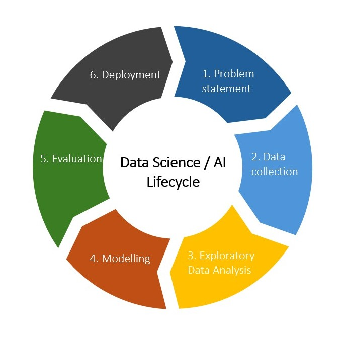
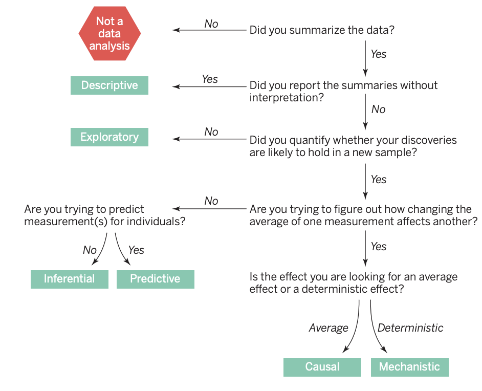

Lecture: Problem Statement
Actuarial Data Science - Open Learning Resource
Learning Objectives
In this lecture, we focus on framing problems: turning a vague business concern into a clear, answerable data science question. A well-posed question saves you time later, as it guides what data are needed and which methods are appropriate.
Understand and explain different types of questions
Justify the importance of a strong understanding of the business, including its objectives, constraints, and operating environment, when designing and implementing a data analytics project
The Data Science Lifecycle
Data Science Lifecycle (DSL)
Data analysis is a highly iterative and non-linear process.
The data analysis process can be viewed as a specific application of the Actuarial Control Cycle, which we refer to as the Data Science Lifecycle (DSL).
Here, we zoom in on the first step of the DSL: problem definition. You should start thinking about where your project sits in this lifecycle, and how a clear problem statement will affect all downstream steps.

The 6 steps of the data science lifecycle (DSL)
- Problem Statement
- Data Collection
- Exploratory Data Analysis
- Modelling
- Evaluation
- Deployment
The Epicycle for Problem Statement
The epicycle consists of three iterative steps:
- Setting expectations
- Collecting information (data) and comparing it to your expectations, and if the expectations do not match
- Revising your expectations or refining the data so that the data and your expectations match
Recommended Reading
- The Art of Data Science, Chapter 3
Applying the Epicycle to Stating and Refining Your Question (Step 1)
You can use the information about the different question types and the characteristics of good questions as a guide to refining your question. To do this, iterate through the following three steps:
Establishing your expectations about the question
Gathering information about the question
Determining whether your expectations match the information you gathered, and refining your question (or expectations) if they do not
Activity 1: Framing the Question
- Work in groups and introduce yourselves
- Select one data science problem based on your own experience
- Apply the epicycle analysis to state and refine your question (Step 1 of the Data Analysis Cycle)
- Summarise the key points and share them on the Teams channel
Question Types and Good Questions
Question Types
- Descriptive: What happened? Provides a summary of the data without drawing conclusions or interpretations.
- What is the average temperature in July across Australian cities?
- How many patients were admitted to the emergency department last year?
- Exploratory: What patterns or relationships exist in the data? Expands on descriptive analysis by exploring the data for patterns, trends, correlations, or relationships to generate ideas or hypotheses.
- Are there clusters of customer behaviour in purchase data?
- Do different social media platforms show different usage patterns by age?
Question Types (continued)
- Inferential: What can we infer about a population based on a sample? Uses sample data to estimate population parameters.
- What is the average income of Australian adults based on a survey?
- Is there a relationship between hours of sleep and the number of accidents based on the collected data?
- Predictive: What is likely to happen in the future? Predicts an outcome based on current or historical data.
- Given a driver’s age, location, and driving history, what is the expected number of insurance claims next year?
- What is the probability of a customer churning in the next three months?
Question Types (continued)
- Causal: What is the effect of X on Y? Determines whether changing one variable leads to a change in another variable, on average, across a population.
- Does wearing a seatbelt reduce fatalities in car crashes?
- Does a new drug reduce blood pressure?
- Mechanistic: How does the system work exactly? Understand the underlying biological, physical, or theoretical mechanisms, i.e. changing one measurement always and exclusively leads to a specific, deterministic behavior in another.
- How does wing design change airflow over a wing to reduce drag, and why is mechanistic data analysis so rare outside of engineering?
- How does smoking cause lung cancer at the cellular level?
Source: adapted from Leek and Peng (2015)
How to Differentiate Question Types?
“We have found that the most frequent failure in data analysis is mistaking the type of question being considered.” — Leek and Peng (2015)

Example
- Is this a causal question?
- Analysing the relationship between cellphone use and brain cancer (link)
Activity 2: Identifying Question Types
Specify the question type your team identified in the previous activity
Share the refined question and its type by replying to your previous post in the Teams channel
Challenge your question:
- Why is this an important question? Who cares about it?
- Has this question already been answered?
- Is this question answerable?
- Is this question too broad? Can it be made more specific?
What makes a good question?
Characteristics of a Good Question
- The question should be of interest to your audience, which depends on the context and environment in which you are working with data
- You should check whether the question has already been answered.
- The question should stem from a plausible framework
- The question should, of course, be answerable.
- Specificity is also an important characteristic of a good question.
Adapted from Peng and Matsui (2015), see Chapter 3.3 of The Art of Data Science for details
Translating Questions into Data Problems
Translating a Question into a Data Problem
- Every question must be operationalised as a data analysis that leads to a result
- Think about what the results would look like and how they might be interpreted
- What types of questions do not lead to interpretable answers?
- Inappropriate data: the available data do not adequately measure the factors of interest
- Confounding: an unobserved factor is related to both the exposure and the outcome
- Bias in data collection: the data collection process leads to biased results
- Selection bias: the data over-represent certain groups relative to the target population
Adapted from Peng and Matsui (2015), see Chapter 3.4 of The Art of Data Science for details
Business Environment and Constraints
Business Environment
- Objectives
- Constraints
- Operating context
Objectives
- Align actuarial modelling with strategic goals:
- Profitability
- Risk management
- Customer retention and growth
- Translate high-level business goals into measurable outcomes:
- Loss ratio targets
- Pricing accuracy and stability
- Fairness or ESG-aligned pricing policies
- Support data-informed decision-making:
- Product development
- Pricing and underwriting strategies
- Reserving and reinsurance planning
Constraints
- Regulatory constraints
- Must comply with insurance and privacy regulations (e.g., APRA, GDPR)
- Limits on use of sensitive attributes in modelling (e.g., gender, ethnicity)
- Ethical and social considerations
- Promote fairness, accountability, and transparency
- Avoid discrimination and reputational risks
- Technical constraints
- Data limitations: missing data, bias, or silos
- Trade-off between predictive power and interpretability
- Computing resources and technical debt
- Financial constraints
- Budget constraints for analytics and modeling
- Capital and solvency considerations
Operating Context
- Market factors
- Competitive pricing pressures
- Customer expectations for personalisation and fairness
- Technology and innovation
- Growing role of machine learning and automation in actuarial work
- Integration with real-time data systems and cloud infrastructure
- Organisational setting
- Collaboration between actuaries, data scientists, and underwriters
- Data governance, version control, and reproducibility
- External shocks
- Impacts of climate events, pandemics, and inflation
- Changes in regulation, accounting standards, or social attitudes
Activity 3: Business Context Analysis
Assume you are an actuary working for a consulting firm. Two teams (Team A and Team B) are working on different projects.
- Team A — Retail Demand Forecasting
Team A works on forecasting demand for a grocery retailer. This project aims to estimate demand so that the supply chain knows how much product to send to stores. Once demand is predicted, the supply chain can determine how much to order, when to order it, and where to send it. Over-forecasting leads to waste, while under-forecasting leads to lost sales. Prediction accuracy is the most important consideration for this project.
Activity 3: Business Context Analysis (continued)
- Team B — Motor Insurance Pricing
Team B works on predicting claims for a motor insurer, specifically for its comprehensive insurance product. This project aims to predict both the number and the cost of claims for the next year in order to set appropriate premiums for prospective policyholders. Over-estimating claims will result in non-competitive premiums, while under-estimating claims could lead to losses. Interpretability and ease of implementation of the model are more important than prediction accuracy for this project. However, the model should still be reasonably predictive.
- For each case, identify the objectives, operating context, and constraints